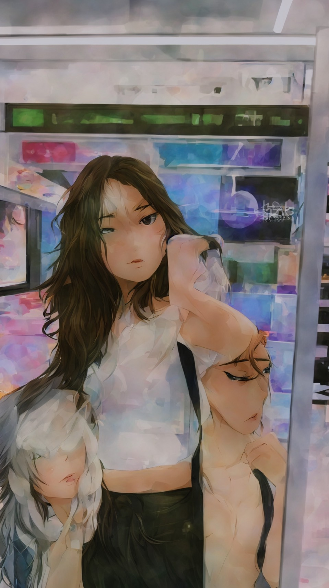
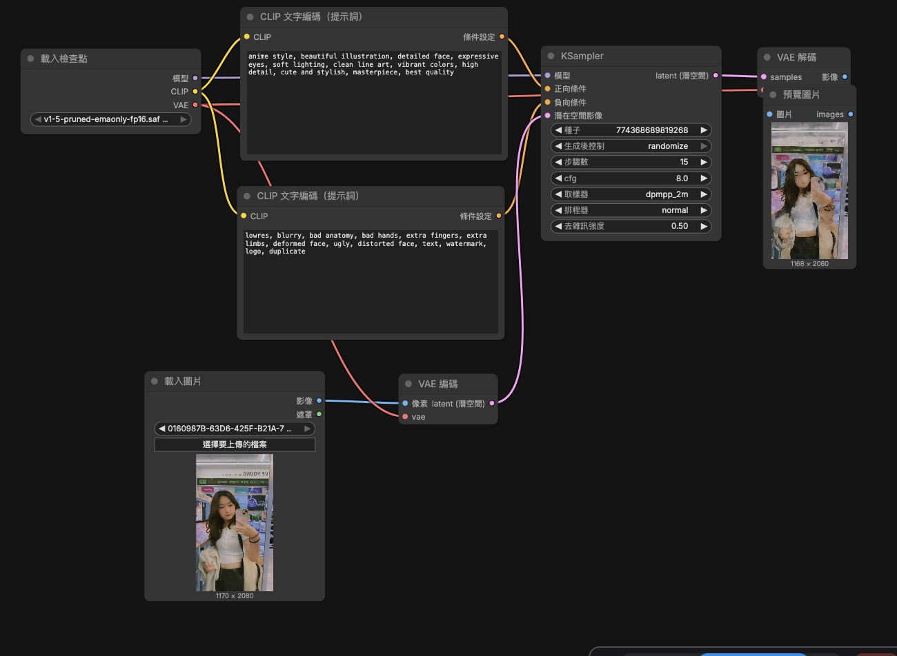

anime style, beautiful illustration, detailed face, expressive eyes, soft lighting, clean line art, vibrant colors, high detail, cute and stylish, masterpiece, best quality
lowres, blurry, bad anatomy, bad hands, extra fingers, extra limbs, deformed face, ugly, distorted face, text, watermark, logo, duplicate
生成出的圖片很奇怪，可能是提示詞沒有打好的緣故，這個工具要運作的過程有點複雜